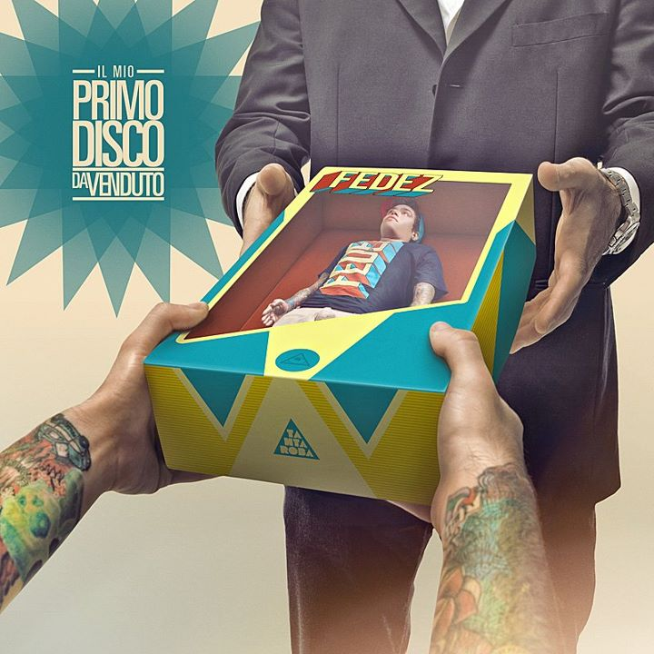

Federico Leonardo Lucia, meglio conosciuto con lo pseudonimo Fedez (Milano, 15 ottobre 1989), è un rapper italiano.
Storia
Nato a Milano il 15 ottobre 1989, ma cresciuto in provincia, precisamente a Rozzano e a Corsico, Fedez entra nel mondo della musica partecipando a varie gare di freestyle, giungendo nel 2008 alla finale piemontese del Tecniche Perfette 2008. I temi principali che vengono trattati nelle sue canzoni sono soprattutto argomenti sociali anticapitalisti, dichiarandosi contro i politici, la massoneria e il comunismo.
Nel 2006 incide il suo primo EP omonimo, con DJ S.I.D. e Cidda, mentre l'anno successivo pubblica il secondo EP Pat-a-Cake. Nel 2010 incide il suo primo mixtape BCPT, a cui presero parte artisti della scena hip hop italiana come Emis Killa, G. Soave e Maxi B. Nello stesso anno pubblica il terzo EP Diss-Agio, con Vincenzo da Via Anfossi e Dinamite prodotto da JT. All'inizio della sua carriera Fedez era membro della crew BloccoRecordz, abbandonata poco dopo la pubblicazione di BCPT a causa di incompatibilità musicali.
Nel mese di marzo 2011 autoproduce il suo primo album in studio Penisola che non c'è, per poi pubblicare nel mese di dicembre dello stesso anno il secondo album Il mio primo disco da venduto, prodotto dalla Tanta Roba, etichetta discografica di Gué Pequeno e di DJ Harsh. L'album ha visto la partecipazione di molti artisti della scena rap italiana, come ad esempio il già citato Gué Pequeno, Entics, Marracash, J-Ax, Jake la Furia e i Two Fingerz. Sempre nel 2011, partecipa all'album dei beatmaker Don Joe e DJ Shablo Thori & Rocce, nella canzone Fuori luogo, realizzata insieme con Cane Secco e Gemitaiz; l'anno successivo partecipa all'album Hanno ucciso l'uomo ragno 2012 in duetto con Max Pezzali nel brano Jolly Blu.
Il mio primo disco da venduto
Il mio primo disco da venduto è il secondo album in studio del rapper italiano Fedez, pubblicato il 30 novembre 2011 dalla Tanta Roba.
Il disco è stato reso disponibile per il download gratuito attraverso il sito ufficiale del rapper, mentre il 18 giugno 2013 è stato ripubblicato nel formato CD, presente nell'edizione speciale del terzo album Sig. Brainwash - L'arte di accontentare, e anche in formato digitale sull'iTunes Store.Grazie alla ripubblicazione, Il mio primo disco da venduto è entrato nella classifica italiana alla posizione 57.

Sig. Brainwash - L'arte di accontentare
Il titolo dell'album trae il proprio nome da un documentario nel quale l'artista Thierry Guetta (soprannominato "Mr. Brainwash") dimostra di saper "accontentare" tutti gli intenditori di arte con la Street Art, l'arte più ricercata al momento, tuttavia copiando un po' da un artista e un po' da un altro. Con "l'arte di accontentare", Fedez vuole quindi criticare quest'ultimo che secondo lui non può essere definito artista.
Sig. Brainwash - L'arte di accontentare presenta collaborazioni con vari artisti, quali Elio, Francesca Michielin, J-Ax, Gué Pequeno, Danti, Dargen D'Amico e i Punkreas. Il 25 marzo 2013, a soli 20 giorni dall'uscita, l'album viene certificato disco d'oro per le oltre 30 mila copie vendute, mentre il 20 maggio l'album supera le 60.000 copie vendute, divenendo quindi disco di platino. Il 18 ottobre Sig. Brainwash è stato certificato doppio disco di platino per le oltre 120.000 copie vendute.